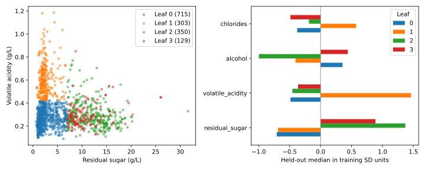

Clustering trees: PCT, CLTree and HDBSCAN¶
Distance-based clustering (k-means, DBSCAN) does not give you readable assignment rules, and it degrades when noisy features distort Euclidean distances. ClusterModel is the single entry point for tree-based clustering. Pick the engine with kind:
kind="pct": predictive clustering tree. Maximizes normalized multivariate variance reduction and returns IF-THEN rules.kind="cltree": density partitions as orthogonal bounding boxes.kind="hdbscan": mutual-reachability minimum spanning tree with a condensed hierarchy.kind="urf": unsupervised random forest.
For a task-first walkthrough on a real dataset, see Clustering in Python. To find outliers instead, see Anomaly trees.
Script: benchmarks/suites/unsupervised_trees.py.
1. Mechanics¶
Predictive clustering trees (PCT)¶
Given \(N\) samples with \(M\) continuous target dimensions \(\mathbf{y}_i \in \mathbb{R}^M\), the total sample variance in partition node \(\mathcal{S}\) is:
where \(\sigma_j^2\) is the global variance of feature \(j\). A candidate split \(s\) partitions node \(P\) into children \(L\) and \(R\). The split score maximizes normalized variance reduction:
Because splits branch on readable feature predicates (\(x_j \le \theta\)), each cluster corresponds to an explicit, auditable IF-THEN rule.
Next: the benchmark applies this variance-reduction split to six chemical features of the wine data and reports the output as one IF-THEN rule per leaf.
2. Benchmark¶
PCT on Wine Quality (1,500 Samples, 6 Chemical Dimensions)¶
- Problem: Group wines by multi-target chemical similarity (
fixed_acidity,volatile_acidity,citric_acid,residual_sugar,chlorides,alcohol). - Setup: the Python example below samples 1,500 wines (seed 2026) and fits
kind="pct"withmax_depth=3andmin_rows=20. The printed rules list each leaf's conditions. - Interpretability: Each leaf gives explicit chemical thresholds, which a domain chemist can audit directly. Run the block to see the thresholds for this sample.
| Algorithm | Split mechanism | Output |
|---|---|---|
| Predictive Clustering Trees | Multi-target variance (\(\Delta \text{Var}\)) | IF-THEN rules, one per leaf |
Next: the Python example fits kind="pct" on those same six features with max_depth=3 and min_rows=20, then prints the rule and prototype for each leaf.
3. Python usage¶
import pandas as pd
from mltreelib import ClusterModel
from mltreelib import dataset_path
df = pd.read_parquet(dataset_path("wine_quality")).sample(n=1500, random_state=2026)
feature_names = ["fixed_acidity", "volatile_acidity", "citric_acid",
"residual_sugar", "chlorides", "alcohol"]
X_wine = df[feature_names].to_numpy().tolist()
pct = ClusterModel(kind="pct", max_depth=3, min_rows=20)
pct.fit(X_wine, col_names=feature_names)
cluster_ids = pct.predict(X_wine)
print(f"Cluster rules: {pct.rules()}")
Cluster rules: [{'cluster_id': 0, 'rule': 'volatile_acidity <= 0.4575 AND residual_sugar <= 7.4500 AND fixed_acidity <= 8.1500', 'prototype': [6.728115942028986, 0.2692898550724639, 0.3207826086956529, 2.9837681159420266, 0.04681014492753618, 10.887125603864735], 'size': 690}, {'cluster_id': 1, 'rule': 'volatile_acidity <= 0.4575 AND residual_sugar <= 7.4500 AND fixed_acidity > 8.1500', 'prototype': [9.450000000000001, 0.3011250000000001, 0.44583333333333325, 2.5287500000000005, 0.06599999999999998, 10.773055555555555], 'size': 120}, {'cluster_id': 2, 'rule': 'volatile_acidity <= 0.4575 AND residual_sugar > 7.4500 AND citric_acid <= 0.4150', 'prototype': [6.915789473684216, 0.2615789473684209, 0.29338815789473655, 11.977960526315796, 0.04586184210526313, 9.886348684210537], 'size': 304}, {'cluster_id': 3, 'rule': 'volatile_acidity <= 0.4575 AND residual_sugar > 7.4500 AND citric_acid > 0.4150', 'prototype': [7.213461538461536, 0.28802884615384616, 0.5402884615384613, 12.855769230769228, 0.04719230769230769, 9.596153846153847], 'size': 104}, {'cluster_id': 4, 'rule': 'volatile_acidity > 0.4575 AND chlorides <= 0.1225 AND citric_acid <= 0.3050', 'prototype': [7.359808612440196, 0.6314114832535888, 0.12325358851674637, 2.621052631578947, 0.07461244019138757, 10.309808612440193], 'size': 209}, {'cluster_id': 5, 'rule': 'volatile_acidity > 0.4575 AND chlorides <= 0.1225 AND citric_acid > 0.3050', 'prototype': [9.273584905660375, 0.5666981132075471, 0.451132075471698, 4.116981132075471, 0.07441509433962265, 10.624528301886793], 'size': 53}, {'cluster_id': 6, 'rule': 'volatile_acidity > 0.4575 AND chlorides > 0.1225', 'prototype': [8.3, 0.5832499999999999, 0.3415, 4.665, 0.2637, 9.615], 'size': 20}]
Next: the PCT leaves above cover all 1,500 wines with no separate noise group, so the worked example uses kind="cltree" to find dense regions and mark low-density points as noise.
4. Worked example: density clustering with ClusterModel¶
Rather than tuning distance metrics across noisy dimensions, ClusterModel(kind="cltree") builds an adaptive spatial partition that separates high-density data regions from low-density noise.

Complete End-to-End Example¶
import numpy as np
from mltreelib import ClusterModel
# 1. Generate multi-modal synthetic customer segments with background noise
rng = np.random.default_rng(2026)
n_per_cluster = 300
# Segment A: High frequency, low ticket
seg_a = rng.normal(loc=[15.0, 25.0], scale=[2.0, 4.0], size=(n_per_cluster, 2))
# Segment B: Moderate frequency, high ticket
seg_b = rng.normal(loc=[5.0, 180.0], scale=[1.0, 15.0], size=(n_per_cluster, 2))
# Segment C: Enterprise accounts
seg_c = rng.normal(loc=[30.0, 450.0], scale=[3.0, 30.0], size=(n_per_cluster, 2))
# Uniform background noise
noise = rng.uniform(low=[0.0, 0.0], high=[40.0, 600.0], size=(80, 2))
X_customers = np.vstack([seg_a, seg_b, seg_c, noise])
feature_names = ["monthly_orders", "avg_order_value"]
# 2. Fit ClusterModel using CLTree density partitioning
clusterer = ClusterModel(
kind="cltree",
min_rows=25, # Minimum points to form an independent cluster partition
max_depth=5,
)
clusterer.fit(X_customers, col_names=feature_names)
# 3. Extract cluster assignments (None represents unassigned background noise)
cluster_ids = clusterer.predict(X_customers)
valid_clusters = [c for c in cluster_ids if c is not None]
unique_clusters = set(valid_clusters)
print(f"Total Customers: {len(X_customers)}")
print(f"Identified {len(unique_clusters)} Cohesive Density Clusters: {sorted(unique_clusters)}")
print(f"Background Noise Points Rejected: {cluster_ids.count(None)}")
# 4. Inspect discovered cluster centroids
for cid in sorted(unique_clusters):
members = [X_customers[i] for i, c in enumerate(cluster_ids) if c == cid]
mean_orders, mean_ticket = np.mean(members, axis=0)
print(f" Cluster #{cid} (n={len(members)}): Orders = {mean_orders:.1f}/mo, Spend = ${mean_ticket:.2f}")
Total Customers: 980
Identified 3 Cohesive Density Clusters: [0, 1, 2]
Background Noise Points Rejected: 232
Cluster #0 (n=229): Orders = 5.1/mo, Spend = $180.86
Cluster #1 (n=286): Orders = 14.9/mo, Spend = $24.61
Cluster #2 (n=233): Orders = 29.5/mo, Spend = $446.29
Limitations¶
- PCT target scaling. Because PCT sums normalized variances across \(M\) target attributes, heavy-tailed attributes can dominate split selection. Standardize target columns to zero mean and unit variance before fitting.
- Cluster size imbalance.
Greedy variance reduction can isolate tiny clusters (\(n < 5\)). Use
min_rows >= 25so segments are viable operational cohorts.
Related guides
- Clustering in Python for the end-to-end wine example.
- API reference: ClusterModel.